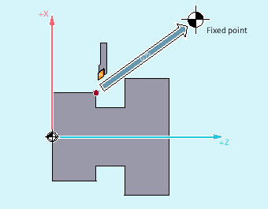

The non-modal command G75 can be used to move axes individually and independently of one another to fixed points in the machine space, e.g. to tool change points, loading points, pallet change points, etc.
The fixed points are positions in the machine coordinate system which are stored in the machine data (MD30600 $MA_FIX_POINT_POS[n]). A maximum of four fixed points can be defined for each axis.
The fixed points can be approached from every NC program irrespective of the current tool or workpiece positions. An internal preprocessing stop is executed prior to moving the axes.
The following requirements must be satisfied to approach fixed points with G75:
The fixed-point coordinates must have been calculated exactly and written to machine data.
The fixed points must be located within the valid traversing range (→ note the software limit switch limits!)
The axes to be traversed must be referenced.
No tool radius compensation must be active.
A kinematic transformation may not be active.
None of the axes to be traversed must be involved in active transformation.
None of the axes to be traversed must be a following axis in an active coupling.
None of the axes to be traversed must be an axis in a gantry grouping.
Compile cycles must not activate motion components.
| Fixed point approach | ||
| Name of the machine axis to be traversed to the fixed point All axis identifiers are permitted. | ||
| The position value has no significance. A value of "0" is, therefore, usually specified. | ||
| Fixed point that is to be approached | ||
| Fixed point number | ||
Range of values: | 1, 2, 3, 4 | ||
Note: | |||
| Note |
Multiple axes can be programmed in one |
| Note |
The value of the address |
For a tool change, axes X (= AX1) and Z (= AX3) need to move to the fixed machine axis position 1 where X = 151.6 and Z = -17.3.
Machine data:
MD30600 $MA_FIX_POINT_POS[AX1,0] = 151.6
MD30600 $MA_FIX_POINT[AX3,0] = 17.3
NC program:
| Program code | Comment |
|---|---|
| … | |
| N100 G55 | ; Activate settable zero offset. |
| N110 X10 Y30 Z40 | ; Approach positions in the WCS. |
| N120 G75 X0 Z0 FP=1 M0 | ; The X axis moves to 151.6; and the Z axis moves to 17.3 (in the MCS).; Each axis travels at its maximum velocity.; No additional movements are permitted to be active in this block.; A stop is inserted here so that after reaching; the end positions,; no additional motion takes place. |
| N130 X10 Y30 Z40 | ; The position of N110 is approached again.; The zero offset is reactivated. |
| … |
| Note |
If the "Tool management with magazines" function is active, the auxiliary function Reason: If "Tool management with magazines" is active, auxiliary functions for tool change are not output to the PLC. |